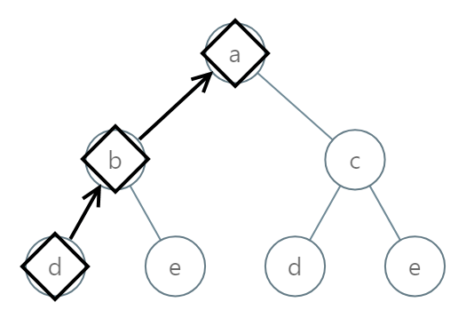
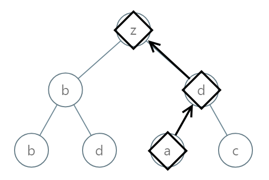
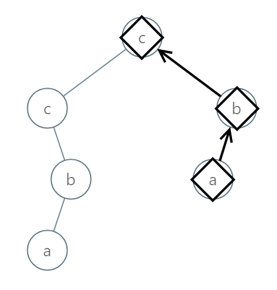

988. 从叶结点开始的最小字符串
DFS 下行时把新字母加在串的最前面（串按叶→根读），到叶子得到完整候选，子树间取字典序最小返回。
思路
- 串读序是「叶 → 根」：DFS 从根往下走，每深入一层新字母越靠近叶，所以
cur = 字母 + cur前置拼接。 - 叶子（左右都空）时
cur就是一条完整的「叶 → 根」串，直接作为候选返回。 - 每个结点在两棵子树返回的候选里取
compareTo较小者；空子树返回 null 跳过。
图解
最优解
1class Solution {2 public String smallestFromLeaf(TreeNode root) {3 return dfs(root, "");4 }5 6 // cur：已走过部分按「叶 → 根」读序拼的串——越往下走离叶越近，新字母要加在最前面7 private String dfs(TreeNode node, String cur) {8 if (node == null) return null;9 cur = (char) ('a' + node.val) + cur;10 // 叶子：这条「叶 → 根」的串完成了，直接作为候选11 if (node.left == null && node.right == null) return cur;12 String l = dfs(node.left, cur), r = dfs(node.right, cur);13 if (l == null) return r;14 if (r == null) return l;15 return l.compareTo(r) < 0 ? l : r;16 }17}题目
给定一颗根结点为 root 的二叉树，树中的每一个结点都有一个 [0, 25] 范围内的值，分别代表字母 'a' 到 'z'。
返回 按字典序最小 的字符串，该字符串从这棵树的一个叶结点开始，到根结点结束。
注：字符串中任何较短的前缀在 字典序上 都是 较小 的：
- 例如，在字典序上
"ab"比"aba"要小。叶结点是指没有子结点的结点。
节点的叶节点是没有子节点的节点。
示例 1：

输入：root = [0,1,2,3,4,3,4] 输出："dba"
示例 2：

输入：root = [25,1,3,1,3,0,2] 输出："adz"
示例 3：

输入：root = [2,2,1,null,1,0,null,0] 输出："abc"
提示：
- 给定树的结点数在
[1, 8500]范围内 0 <= Node.val <= 25
题面取自力扣当前版本。
数据快照 2026-11-04。题面版权归力扣所有，本站点仅供本人学习使用，请勿对外发布。